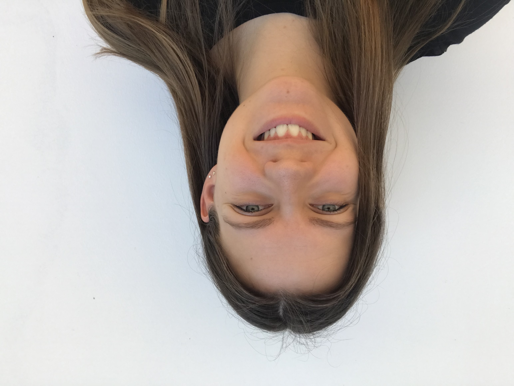

Kedves Látogató!
Üdvözöllek porfóliós oldalamon, melyen eddig elkészült munkáimat, illetve fényképeim láthatod.
Néhány szó rólam:
Aradi Nikolett vagyok, Egerben születtem itt is végeztem középiskolai tanulmányaimmal. Érettségi után Budapesten folytattam tanulmányaim, jelenleg elsőéves hallgató vagyok a Budapesti Műszaki- és Gazdaságtudományi Egyetem ipari termék- és formatervező mérnöki szakán.
Már kiskorom óta imádok festeni, rajzolni, kretívkodni, ez mindig is a mindennapi tevékenységeim közé tartozott. Néhány rajzot, festményt, amelyet meg is nézhetsz a Hobby fülön.
Később egyik kedvnec szabadidős tevékenységem lett a fotózás is, melyről szintén láthatttok pár képet.
